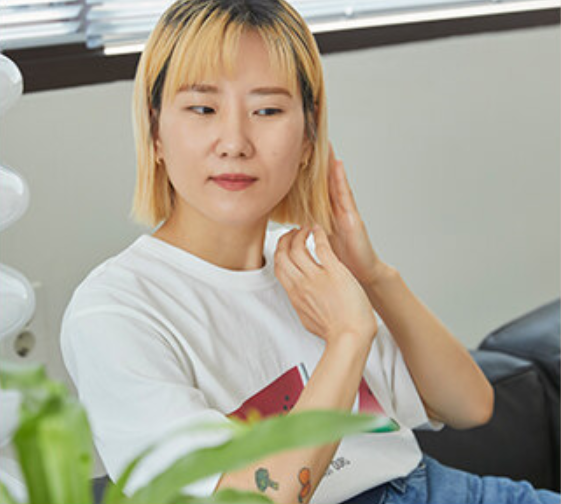
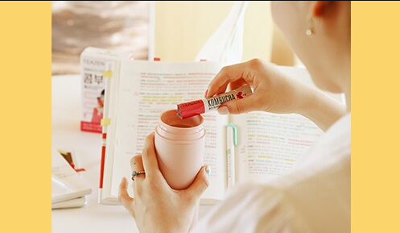

.png)
다른 브랜드 더보기
내 피부도 소중하게!


Health Care zone
.png)


로스쿨생 로영의 갓생라이프
24시간 모자란 로영의
"갓생 아이템"을 소개합니다
"갓생 아이템"을 소개합니다
비건패션 브랜드 CEO 추천
비건패션 브랜드 낫아워스 대표의
"비건 라이프"
"비건 라이프"
여행기자의 여행필수 아이템
매달 "여행"을 떠나는
여행기자의 라이프를 소개합니다.
여행기자의 라이프를 소개합니다.
MY skin type
지성피부
건성피부
민감성 피부
복합성 피부
지성피부
산뜻한 젤 타입이나 로션타입의 제품 사용해야
산뜻한 젤 타입이나 로션타입의 제품 사용해야 지성피부는 피지분비선이 발달해서 피지분비량이 많으며 모공이 넓고 번들거리는 피부 특성을 갖고 있다. 피지분비량이 많은 지성피부는 자주 번들거리기 때문에 철저한 세안이 가장 중요하다. 과잉피지로 모공이 막히거나 각질이 두껍게 쌓이면 피부트러블이 생기기 쉬우므로 이중 세안을 철저히 한다. 지성피부의 경우 끈적임이 많은 제품보다는 산뜻한 젤 타입이나 로션 타입의 클렌징 제품을 사용하고, 주 1회 정도 딥클렌징, 스크럽을 통해 각질을 제거해준다. 클렌징 후에는 수분을 충분히 공급해 주는 것이 중요하다. 유분기가 적은 수분크림을 사용하도록 하고, 화장품의 경우에는 오일프리 제품을 사용해 지나친 유분이 공급되는 것을 예방해주는 것이 좋다.
건성피부
알코올 성분 들어 있는 제품은 피해야
유수분이 부족한 건성피부는 다른 피부타입 보다 더욱 쉽게 건조해져 가을철 피부 노화가 빠르게 진행될 수 있다. 건성피부는 다른 피부타입보다 각질세포의 생성이 많기 때문에 일주일에 1회 정도 각질 관리가 필요하다. 스크럽 제품은 피부에 자극이 가지 않도록 알갱이가 미세한 스크럽제를 이용하며 이마, 코, 볼, 턱 등 얼굴 전체를 부드럽게 마사지 하듯 세안해준다. 세안 후에는 로션이나 크림 등으로 피부에 수분과 영양을 공급해주도록 한다. 단, 화장수를 사용할 경우 알코올이 들어있는 화장수는 건성 피부를 더욱 건조하게 만들므로 알코올이 없는 제품을 사용하는 것이 좋다. 스크럽 후에도 각질 세포가 들떴다면 에센스나 오일을 가볍게 두드리듯 바르면서 가라앉히고, 물을 자주 마시는 것도 수분 공급에 도움을 주며, 주 2회 정도 수분 공급팩을 사용하는 것도 좋다.
복합성 피부
T존 중심으로 꼼꼼히 각질제거와 세안해야
산뜻한 젤 타입이나 로션타입의 제품 사용해야 지성피부는 피지분비선이 발달해서 피지분비량이 많으며 모공이 넓고 번들거리는 피부 특성을 갖고 있다. 피지분비량이 많은 지성피부는 자주 번들거리기 때문에 철저한 세안이 가장 중요하다. 과잉피지로 모공이 막히거나 각질이 두껍게 쌓이면 피부트러블이 생기기 쉬우므로 이중 세안을 철저히 한다. 지성피부의 경우 끈적임이 많은 제품보다는 산뜻한 젤 타입이나 로션 타입의 클렌징 제품을 사용하고, 주 1회 정도 딥클렌징, 스크럽을 통해 각질을 제거해준다. 클렌징 후에는 수분을 충분히 공급해 주는 것이 중요하다. 유분기가 적은 수분크림을 사용하도록 하고, 화장품의 경우에는 오일프리 제품을 사용해 지나친 유분이 공급되는 것을 예방해주는 것이 좋다.
민감성피부
클렌저 및 수분크림 사용 전 소량으로 테스트한 후 사용해야
산뜻한 젤 타입이나 로션타입의 제품 사용해야 지성피부는 피지분비선이 발달해서 피지분비량이 많으며 모공이 넓고 번들거리는 피부 특성을 갖고 있다. 피지분비량이 많은 지성피부는 자주 번들거리기 때문에 철저한 세안이 가장 중요하다. 과잉피지로 모공이 막히거나 각질이 두껍게 쌓이면 피부트러블이 생기기 쉬우므로 이중 세안을 철저히 한다. 지성피부의 경우 끈적임이 많은 제품보다는 산뜻한 젤 타입이나 로션 타입의 클렌징 제품을 사용하고, 주 1회 정도 딥클렌징, 스크럽을 통해 각질을 제거해준다. 클렌징 후에는 수분을 충분히 공급해 주는 것이 중요하다. 유분기가 적은 수분크림을 사용하도록 하고, 화장품의 경우에는 오일프리 제품을 사용해 지나친 유분이 공급되는 것을 예방해주는 것이 좋다.
고객센터 이용안내
- 온라인고객센터
1522-0882 -
매장고객센터
1577-4887
고객센터 운영시간
[평일 09:00 - 18:00]
주말 및 공휴일
1:1문의를 이용하시기 바랍니다.